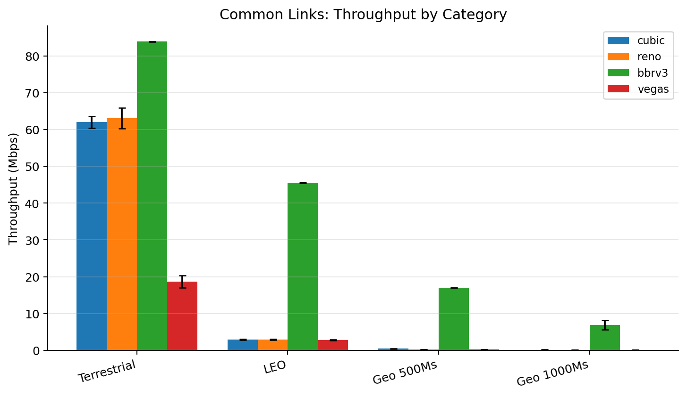
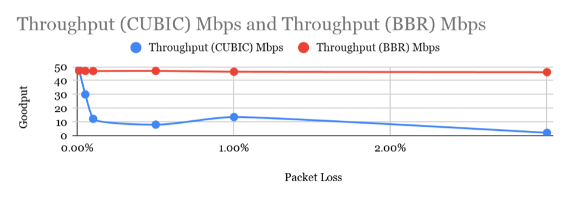
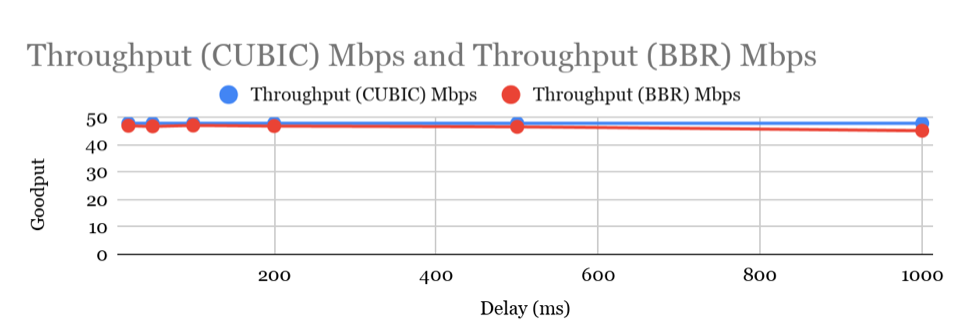
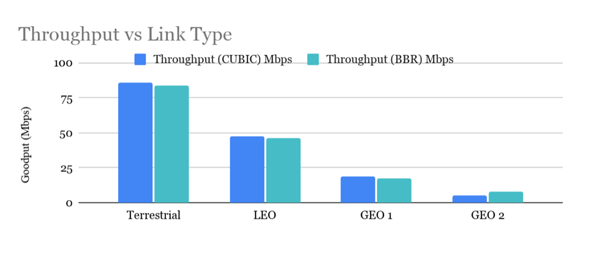
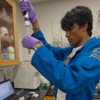

BBRv3
Model-basedUnlike loss-based CCAs like Reno and CUBIC, BBR builds an explicit model of the network path. BBR operates by periodically probing the bottleneck bandwidth and round trip time of the link.

EE 122 Network Systems Study
The goal of this project is to evaluate and compare the performance of modern TCP congestion control algorithms under a range of emulated network conditions.
May 10th, 2026
01 / Overview
While traditional congestion control schemes like CUBIC are widely deployed, they are known to be sensitive to high latency and packet loss, which are common in environments such as satellite communication links.
Our research focuses on understanding how each algorithm behaves under controlled variations in delay, packet loss, and link characteristics, with particular emphasis on scenarios representative of satellite-based communication systems to determine the optimal algorithm for such network conditions.
Our project addresses this gap by using controlled tc/netem experiments to evaluate how these algorithms respond to high delay, packet loss, jitter, and constrained link rates.
02 / Background
Our experiments compare BBRv3, CUBIC, Reno, and Vegas. The descriptions below are excerpted from the Background section of our extended abstract.
Unlike loss-based CCAs like Reno and CUBIC, BBR builds an explicit model of the network path. BBR operates by periodically probing the bottleneck bandwidth and round trip time of the link.
Reno controls congestion by modulating how much unacknowledged data the sender can have in flight via a congestion window. Reno can underutilize high-bandwidth-delay-products or lossy paths.
Unlike Reno, CUBIC uses a cubic window-growth function rather than a linear one. This allows bandwidth to be recovered more efficiently than Reno on high-bandwidth-delay-product paths.
Vegas is a delay-based congestion control algorithm that attempts to proactively detect congestion before packet loss occurs. Vegas’s approach can avoid some packet loss and reduce queueing delay.
03 / Methods
To emulate network behavior, we use the Linux utility tc (traffic control), which allows configuration of queueing disciplines (qdiscs) within the kernel networking stack.
Installed Ubuntu 25.10 on VMWare Fusion; created a Linked Clone for client/server pair.
Utilized tc and netem to tweak latency, jitter, and loss variables.
Executed iperf3 tests between VMs to generate traffic using a specific algorithm.
Collected JSON data to interpret trade-offs between throughput and latency control.
Common Links
To evaluate performance under realistic networking environments, we simulated representative terrestrial, Low Earth Orbit (LEO) satellite, and Geostationary Earth Orbit (GEO) satellite link conditions.
| Link profile | Delay | Jitter | Rate | Loss | Queue depth |
|---|---|---|---|---|---|
| Terrestrial | 20 ms | 2 ms | 90 Mbps | 0.01% | 300 packets |
| LEO | 80 ms | 8 ms | 50 Mbps | 0.3% | 667 packets |
| GEO 500 ms | 500 ms | 50 ms | 20 Mbps | 1% | 1,667 packets |
| GEO 1000 ms | 1,000 ms | 100 ms | 10 Mbps | 3% | 1,667 packets |
All tests below are listed with a queue depth of 2 × BDP, which is considered a very deep buffer. We expect that this will favor loss-based CCAs.
04 / Results
Our extended abstract presents preliminary results collected before the in-class poster presentation followed by the final post-presentation trials across CUBIC, BBRv3, Reno, and Vegas.
Preliminary Data / Pre-Poster Presentation
This section outlines our preliminary results using data from limited trials that we conducted before the in-class poster presentation. Note that only a single trial was performed per test case, so interpret this data with some skepticism. Our final results in the following section were collected using the rigorous methodology described above, and largely validate these conclusions.
Preliminary Packet Loss Analysis
To evaluate the impact of packet loss on throughput and stability, we varied the packet loss rate while keeping the network delay constant. The experiments were conducted with a fixed delay of 50 ms, 0 ms jitter, a 50 Mbps link rate, and a queue depth of 2×BDP.
Under these conditions, BBRv3 maintained a high and stable throughput of approximately 45 Mbps across all loss rates. In contrast, CUBIC throughput decreased significantly as packet loss increased, indicating greater sensitivity to lossy network conditions.

Preliminary Delay Analysis
To evaluate performance under increasing RTT, we varied the network delay while maintaining zero packet loss. The experiments were conducted with 0 ms jitter, a 50 Mbps link rate, and a queue depth of 2×BDP.
Under these conditions, BBR slightly outperformed CUBIC across the tested delay values. We hypothesize that BBR would demonstrate a larger performance advantage under shallow buffer conditions, where its bandwidth and RTT estimation mechanisms may better utilize available network capacity.

Preliminary Common Links
To evaluate performance under realistic networking environments, we simulated representative terrestrial, Low Earth Orbit (LEO) satellite, and Geostationary Earth Orbit (GEO) satellite link conditions.
All experiments were conducted with a packet loss correlation of 25% and a queue depth of 2×BDP. Additional parameters for each category are listed in the table above.
Both algorithms perform comparably, with CUBIC slightly outperforming BBRv3 for the Terrestrial, LEO, and GEO 1 test cases. BBRv3 significantly outperformed Cubic in the GEO 2 case, likely due to the high packet loss condition.

Post-Presentation Trials
After collecting all data for Cubic, BBRv3, Reno and Vegas algorithms, and plotting the results, we see that BBR continues to outperform in the throughput and utilization throughput categories.
Mean receiver-side throughput from the final loss trials.
Mean receiver-side throughput for the 1,000 ms delay, 100 ms jitter, and 3% loss profile.
Mean receiver-side throughput for the delay-only test.
Mean retransmission rate from the final loss trials.
Final Common Links
However, there is a bigger picture: we notice that BBRv3 is the highest by a large factor when it comes to retransmission numbers. While BBRv3 is designed to maximize throughput through aggressive bandwidth probing, these results suggest that on GEO networks it may introduce instability or excess packet loss, whereas Reno, CUBIC, and Vegas remain comparatively stable.
Final Delay Analysis
Looking at delay vs throughput, TCP Cubic and Reno are the most stable, with BBRv3 consistently tapering off and Vegas experiencing the highest drop at GEO-scale delays.
Reno and Vegas maintained fast convergence times across all RTTs, while CUBIC showed increased convergence time at very high delays despite preserving strong throughput performance. BBRv3 exhibited the most inconsistent convergence behavior. We can see this in the pretty significant fluctuations across delay periods.
Final Packet Loss Analysis
Regarding loss, in accordance with earlier conclusions, BBRv3 is the highest in retransmission rates given percent loss. This is likely because its congestion control strategy is much more aggressive than the other algorithms, consistently transmitting at higher rates.
To compensate for the more aggressive algorithm when it comes to retransmission, we can see that the throughput and utilization rates observed are much higher in BBRv3 than the other algorithms, as before.
Final Summary
There are more specific test case graphs available for viewing on the GitHub to visualize specific conditions, however there is a “winner table” of specific conditions outlined below of algorithm “bests” and which algorithm is most effective in each category. The competition is clearly between BBRv3 and Cubic.
We also have a heat map mapping utilization rates across conditions and algorithms. Visually, it is clear that BBRv3 outperforms the other algorithms in this capacity. The yellow is max utilization, and the purple is the min. BBRv3 is majority yellow and green across all conditions, and more yellow across most indicating a higher overall efficiency.
05 / Figures
The final analysis includes 26 figures generated from the receiver-side iperf3 results. Select a suite and figure below to review the plotted results.
06 / Future Work
With additional time, there are a variety of improvements and additional cases to investigate.
Primarily, we plan on testing a variety of buffer depths.
Additionally, we would like to measure latency as a performance metric in addition to bandwidth.
Further investigation with competing parallel flows and fairness between algorithms would be informative.
07 / Documents
The extended abstract contains our final write-up. The poster and presentation deck document the project at the midpoint presentation.
Our final paper, including the introduction, methods, results, conclusion, future work, acknowledgements, and references.
Our poster from the midpoint presentation, including the preliminary CUBIC and BBRv3 results.
Our midpoint presentation deck, including the experimental process, preliminary results, and planned analysis pipeline.
Our experiment setup scripts, analysis pipeline, generated figures, and project materials.
This project was developed in collaboration with LabN, and we would like to thank Dan Lukaszewski for his support and guidance throughout the project.
Visit LabN08 / Team
Nicholas Carpenedo, Allison Dana, and Rohin Shanker completed this project for Electrical Engineering 122 at the University of California, Berkeley. We would also like to thank Dan Lukaszewski for his support and guidance throughout the project.

Rohin recently graduated from UC Berkeley with a B.S. in Bioengineering and EECS.
Nick graduated from Berkeley with a B.S. in EECS.
Allison is starting her 4th year at UC Berkeley and is getting a degree in EECS.
Supported the project with guidance throughout the study in collaboration with LabN.
09 / Course
EE 122 examines communication-network architecture and analysis from the physical layer through transport and applications. Our project applies its transport-layer material to TCP congestion control under emulated network conditions.
UC Berkeley EECS course page